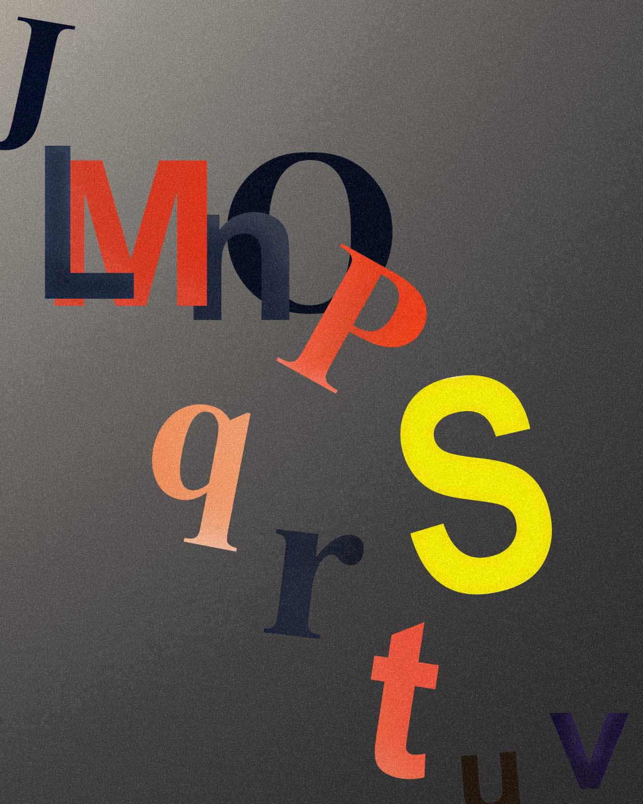

I have a few types of synesthesia, but by far the strongest is grapheme-color, in which I associate letters, numbers, and other symbols with certain colors.
Some colors, like the orange-ish red of 'P' and 'M', appear throughout the alphabet, while others are specific to a single letter, like the yellow of 'S'.
Letters color words. The first letter is the most important, but certain others after it effect hue, brightness, etc. Words, for me, are gradients more than single colors (a color journey, if you will).
For example, 'Duncan' is green because 'D' is green. The 'U' (brown) muddies that green, but the 'A' (lighter green) brightens the word again. So reading 'Duncan' starts green, dips to brown, and returns to green.
A bit like this: Duncan

Bored during the first summer of Covid, I began exploring these associations. I found colors and textures for each letter, and plotted the spacial sequence of the alphabet.
The problem with these, however, was that they were static. I wanted movement, to simulate the synesthetic experience of reading and writing. So I started coding.
This project, written in Java in May of 2020, displays bursts of color whenever a letter is typed. It's very simple, and a bit of an exaggeration, but it does what I intended.

You can see the project and try the program yourself on my Github.
Or, just download synesthesim.jar.